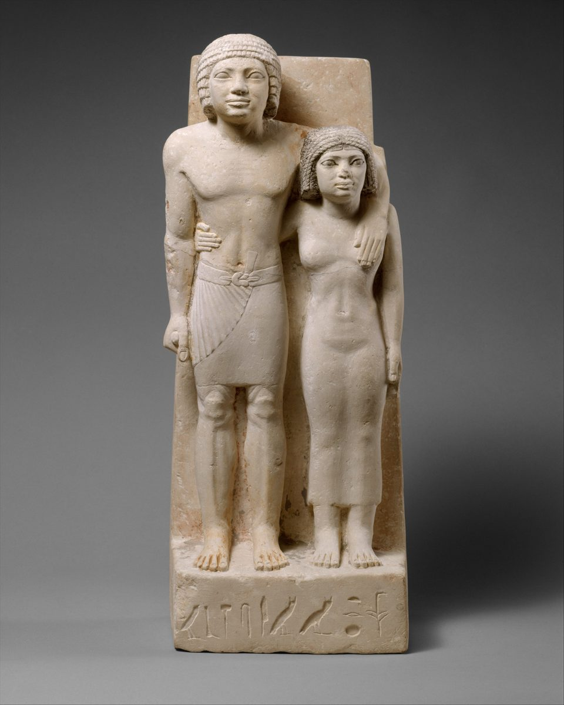
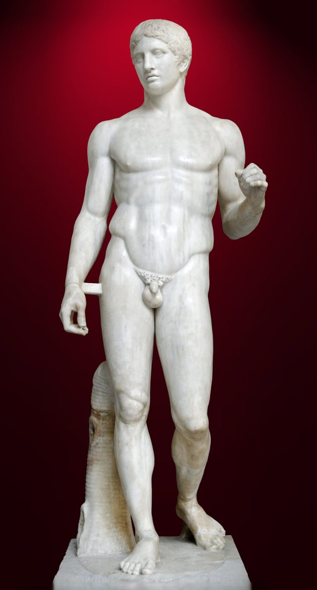
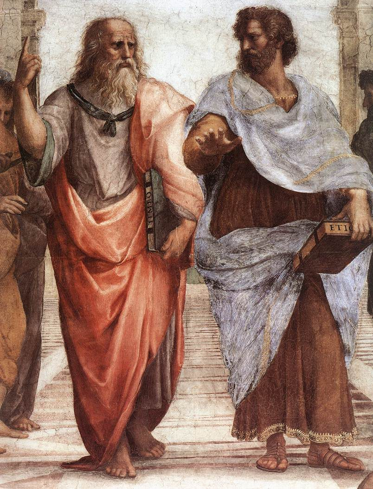
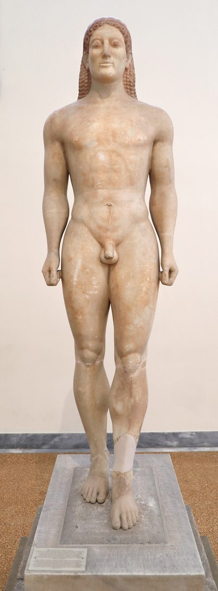
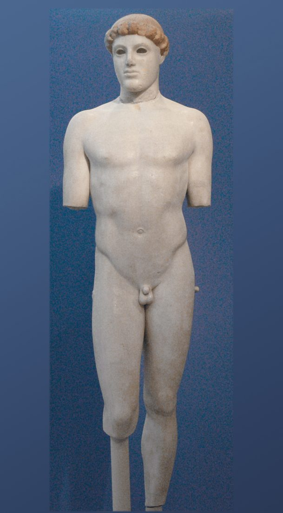
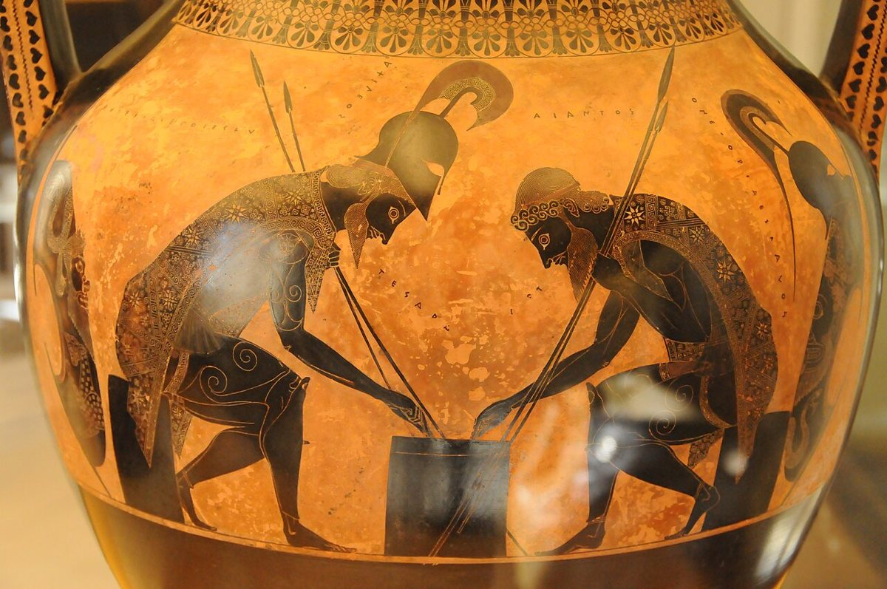
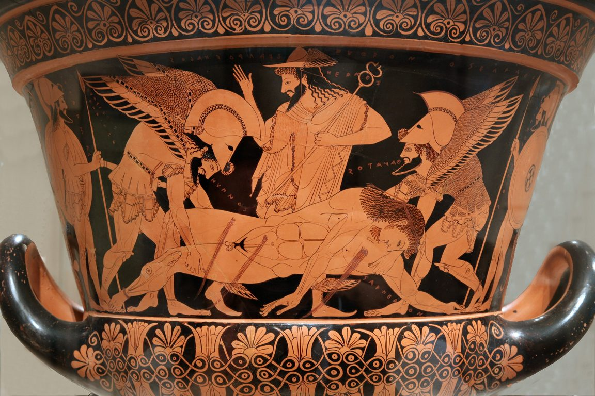
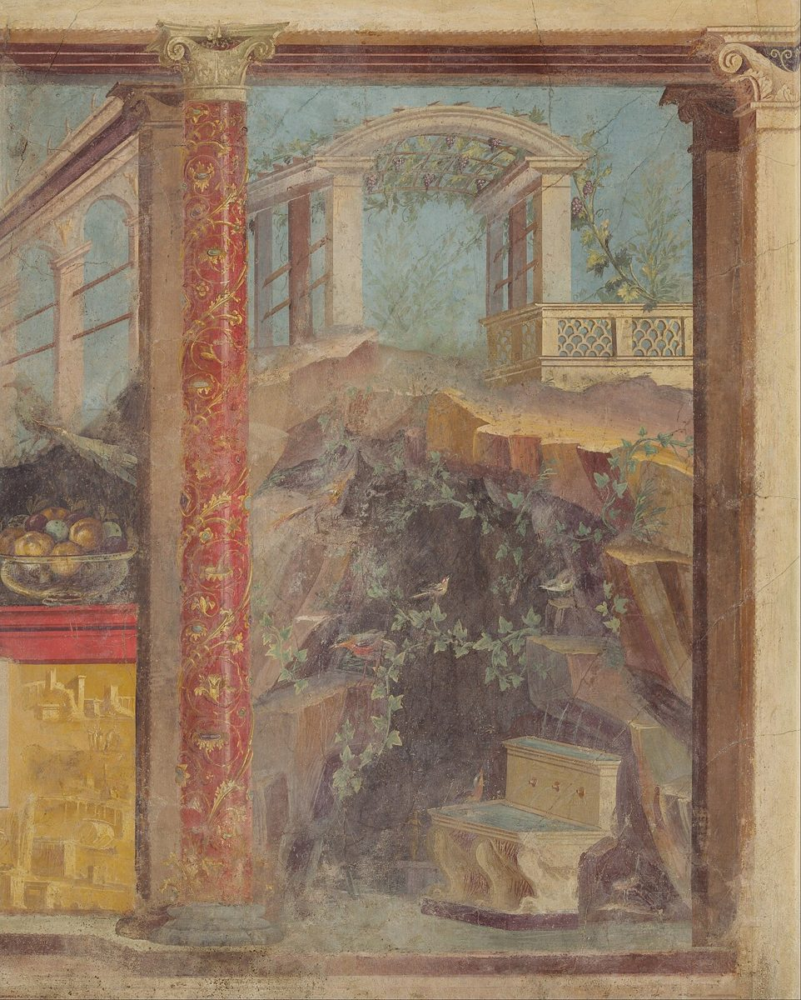
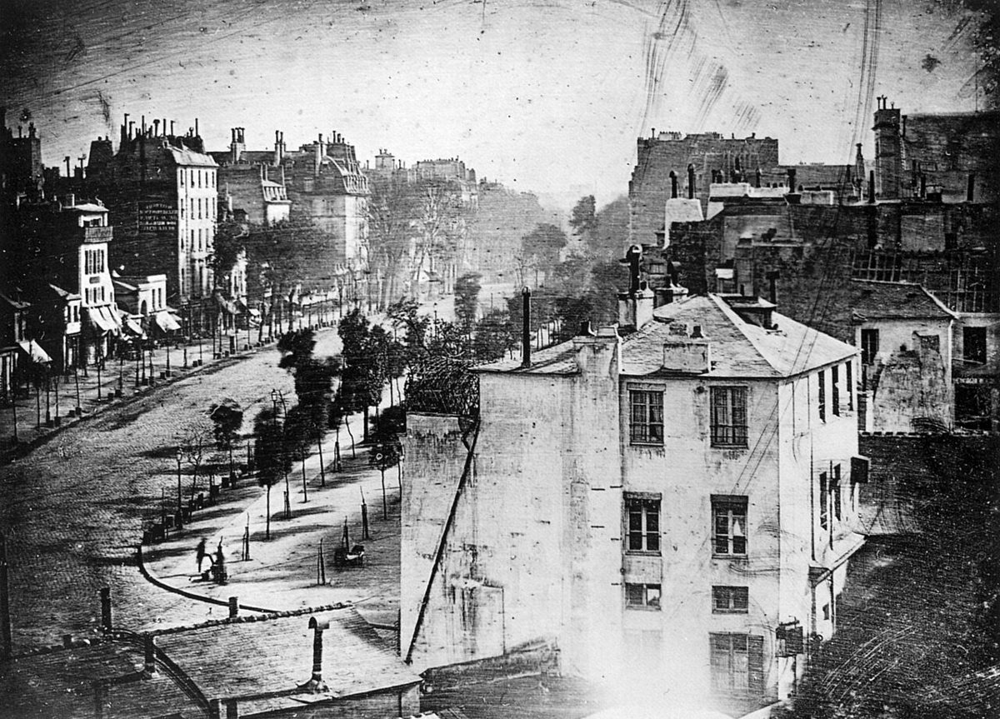

이집트 · 정면성〈메미와 사부〉 기원전 2575–2465년경, 메트로폴리탄
왼발을 내밀어도 체중은 양발에 균등. 골반·어깨 수평, 등은 돌덩이에 붙어 있다. 걷는 것이 아니라 '영원히 서 있는' 자세.
2026년 9월 고1 전국연합학력평가 · 영어 33번(빈칸 추론) 지문의 미술사 개념 풀이
지문 하나에 그리스 조각, 도기, 화가들의 전설, 그리고 잭슨 폴록이 나온다. 영어 문제를 풀려면 이 개념들이 왜 한 줄에 놓였는지 알아야 한다.
한광여고 미술 · 이대행

33.2026년 9월 고1 전국연합학력평가 · 영어 영역 · 인천광역시교육청 주관, 2026. 9. 2. 시행 · 문제지 원본 내려받기(EBSi 기출문제) The ancient Greeks felt that the visual artist's goal was to copy visual experience. This approach appears in the realism of ancient Greek sculpture and pottery. We must sadly note that, due to the action of time and weather, no paintings from ancient Greek artists exist today. We can only surmise their quality based on tales such as that of Zeuxis and Parhassios, the obvious skill in ancient Greek sculpture, and in drawings that survive on ancient Greek pottery. This definition of art as copying reality has a problem, though. Jackson Pollock, a leader in the New York School of the 1950's, intentionally did not copy existing objects in his art. While painting these works, Pollock and his fellow artists would consciously avoid making marks or passages that resembled recognizable objects. They succeeded at making artwork that did not copy anything, thus demonstrating that the ancient Greek view of art as mimesis — simple copying — .
밑줄 친 대목이 각각 하나의 미술사 장면이다. 순서대로 짚고 마지막에 빈칸으로 돌아온다.
미메시스(mimesis)는 '흉내 내기'라는 뜻의 그리스어다. 지문의 "예술 = 시각 경험을 베끼는 것"이라는 정의는 여기서 나왔다. 그런데 이 단어를 처음 이론화한 두 철학자는 정반대 판단을 내렸다.
플라톤은 참된 것은 눈에 보이는 세계 너머의 이데아에만 있다고 봤다. 침대의 이데아는 하나. 목수는 그것을 본떠 나무 침대를 만들고, 화가는 그 나무 침대를 또 본뜬다. 그림은 '모방의 모방', 플라톤의 표현으로는 진리로부터 세 번째 것이다.
더 나쁜 건 그 방식이다. 화가는 침대의 한쪽 면, 한 시점에서 보이는 겉모습(phainomenon)만 옮긴다. 물속의 막대가 꺾여 보이듯 눈은 속는다 — 그리고 미술은 그 착각을 이용한다. 그래서 그는 이상 국가에서 시인과 화가를 추방하자고 했다.
화가는 사물을 아는 척할 뿐, 아무것도 만들지 않는다.
제자는 스승의 이데아론을 받아들이지 않았다. 형상은 저 너머가 아니라 사물 안에 있다. 그러니 사물을 잘 관찰해 옮기는 일은 진리에서 멀어지는 게 아니라 진리에 다가가는 방법이다.
사람은 어릴 때부터 흉내 내며 배우고, 흉내 낸 것을 보며 즐거워한다. 시체나 흉측한 짐승도 잘 그린 그림으로 보면 기쁘다 — "아, 저건 그것이구나" 하고 알아보는 쾌감 때문이다. 게다가 좋은 모방은 있는 그대로가 아니라 '있을 법한 것'(9장), 즉 본질을 골라 옮긴다. 미메시스는 단순 복사가 아니라 이해의 방식이다.
모방하는 것은 인간에게 본성이며, 모방된 것에서 모두가 기쁨을 얻는다.
지문과의 연결. 지문은 그리스인의 "예술 = 베끼기"를 한 덩어리로 말하지만, 실제 그리스 안에서도 이미 갈라져 있었다. 플라톤이 보기엔 완벽한 모방일수록 더 큰 거짓이고, 아리스토텔레스가 보기엔 모방은 앎이다. 폴록이 2,400년 뒤에 던진 질문 — "베끼지 않아도 예술인가?" — 는 플라톤의 의심 위에 서 있는 셈이다.

그리스 조각은 처음에 이집트의 자세 공식과 비례 체계를 가져왔다. 왼발을 내밀고, 주먹을 쥐고, 정면을 본다. 그러다 기원전 480년 무렵 조각가가 한쪽 다리에 체중을 싣자 골반이 기울고 어깨가 반대로 기울며 척추가 S자를 그린다. 이 '맞서 놓기'(contrapposto)가 시각 경험을 베낀다는 목표의 첫 결정적 성과다.

왼발을 내밀어도 체중은 양발에 균등. 골반·어깨 수평, 등은 돌덩이에 붙어 있다. 걷는 것이 아니라 '영원히 서 있는' 자세.

이집트 입상과 같은 정면 자세와 내민 왼발. 다만 등판을 떼어내고 나체로 세워 근육을 관찰하기 시작했다. 입가의 아르카익 미소는 흔히 '살아 있음'의 표시로 읽힌다.

왼다리에 체중, 오른무릎은 풀림. 골반 기울고 머리는 살짝 돌아간다. 체중 이동이 나타난 가장 이른 예로 꼽힌다.
폴리클레이토스가 인체 비례를 수치화한 『카논』의 실물 교본. 긴장한 다리 위에 이완된 팔, 이완된 다리 위에 긴장한 팔 — 교차 균형.
로마 모각 문제. 우리가 아는 그리스 걸작 대부분은 청동 원작이 녹여져 사라지고 로마인이 대리석으로 베낀 복제품이다. 도리포로스도 그렇다. 지문이 "회화가 남아 있지 않다"고 한 것처럼 조각도 온전하지 않다 — 그리스 미술은 대부분 '베낀 것을 통해' 본다.
지문은 그리스 회화가 하나도 남지 않았다고 말하지만, 정확히는 이름난 화가들의 벽화·목판화가 사라진 것이다. 파에스툼 〈잠수부의 무덤〉, 베르기나의 마케도니아 왕묘 벽화처럼 남은 그림도 있다. 다만 양이 적어, 구워 굳힌 도기의 그림이 그리스 회화를 연구하는 가장 큰 자료가 된다. 기법은 두 단계로 진화한다.

인물을 검은 실루엣으로 그리고, 세부는 날카로운 도구로 긁어서 새긴다. 망토 무늬 하나하나가 새김선. 정교하지만 선이 딱딱하고 몸의 두께가 잘 안 보인다.

배경을 검게 칠하고 인물은 흙색 그대로 남긴다. 세부는 새기는 대신 붓으로 그린다 — 굵고 가는 선, 근육의 겹침, 뒤틀린 몸. 회화에 훨씬 가까워졌다. 이 전환이 기원전 530년경 — 조각의 콘트라포스토보다 반세기 앞선다.
그리스 도기의 검정은 물감이 아니다. 같은 점토에서 가장 고운 입자만 골라낸 묽은 진흙물(슬립)을 붓으로 바른 것뿐이다. 이 슬립은 입자가 촘촘해서 불 속에서 유리처럼 녹아 붙고, 거친 바탕 흙은 그러지 않는다. 그 차이가 색을 가른다.
그래서 흑회식은 인물에 슬립을 칠하고, 적회식은 배경에 슬립을 칠한다. 칠하는 자리만 바뀐 것인데, 결과는 크게 다르다. 흑회식 화가는 검은 덩어리를 긁어내 선을 만들어야 하니 선이 뻣뻣하고 굵기가 일정하다. 적회식 화가는 붉은 바탕 위에 붓으로 슬립을 그으면 되니 굵고 가늘게, 진하고 옅게 — 붓의 언어가 생긴다. 근육의 겹침, 옷의 투명함, 몸의 비틀림이 이때부터 가능해졌다. 그리고 화가는 이 모든 것을 붉은 진흙 위에 붉은 진흙으로 그렸다. 검정이 되는 건 가마에서 나온 뒤다.
회화가 남지 않았으니 남은 건 이야기다. 로마의 플리니우스(『박물지』 35권)가 전하는 기원전 5세기 아테네에서 활동한 최고 화가 둘(제욱시스는 헤라클레이아, 파라시오스는 에페소스 출신이다)의 승부.
기준은 단 하나 — 얼마나 감쪽같이 속이는가. 미메시스가 이상이던 시대의 '실력'이 무엇이었는지 보여준다.
포도를 그리자 새들이 날아와 쪼려 했다. 자연이 속았으니 승리를 확신했다.
"이제 커튼을 걷고 그림을 보여주게." 손을 뻗었지만 커튼 자체가 그림이었다.
새를 속인 제욱시스, 화가를 속인 파라시오스. 플리니우스는 제욱시스가 패배를 인정했다고 전한다.
프랑스어로 '눈을 속이다'. 파라시오스의 커튼이 곧 원형이다. 평면 위에 그림자·원근·질감을 쌓아 진짜라고 착각하게 만드는 회화를 말한다.
그리스 원본은 남지 않았지만, 같은 눈속임을 로마 저택 벽에서 볼 수 있다. 창문이 없는 침실 벽에 열린 창과 정원, 발코니, 기둥을 그려 넣었다. 두 화가의 기법이 그대로 전해졌다고 입증할 수는 없다.

1839년 다게르가 사진술을 공개했다. 빛이 스스로 세상을 베낀다. 화가가 평생 갈고닦은 '실물처럼'이 몇 분 만에 끝났다.
화가들은 되물었다. 베끼는 게 사진의 몫이면, 그림은 무엇을 해야 하나. 화가들이 향한 곳은 '그림 자체'였다 — 색, 붓질, 평면, 물감. 인상주의에서 추상까지의 100년을 사진 하나가 밀어낸 결과로만 볼 수는 없지만, 사진의 등장이 이 질문을 날카롭게 만든 것은 분명하다.

잭슨 폴록은 캔버스를 바닥에 눕히고 물감을 떨어뜨리고, 흘리고, 뿌렸다. MoMA는 막대와 굳은 붓 등을 썼다고 설명한다 — 붓으로 화면을 문지르는 방식이 아니다. 그리는 동안 알아볼 수 있는 사물을 닮은 흔적은 의식적으로 피했다 — 지문이 말하는 그대로다.
1950년대 뉴욕 미술을 이론화한 비평가는 둘이었고, 같은 그림을 두고 정반대 것을 봤다.
해럴드 로젠버그는 1952년 글 「미국의 액션 페인터들」에서 '액션 페인팅'이라는 이름을 붙였다. 흥미롭게도 이 글은 화가의 이름을 단 한 명도 적지 않는다 — 특정 작가론이 아니라 태도의 선언이었다. 캔버스는 그림을 그리는 곳이 아니라 행위가 일어나는 무대다. 남는 것은 그림이 아니라 사건의 흔적이며, 중요한 건 결과물이 아니라 화가가 몸으로 부딪친 그 순간이다. 이 관점에서 폴록의 캔버스는 무엇을 '재현'한 게 아니라 무언가가 '일어난' 자리다.
클레멘트 그린버그는 그 이름을 싫어했다. 그는 행위가 아니라 결과물의 형식을 봤다. 그가 보기에 회화의 역사는 회화가 아닌 것 — 이야기, 환영, 조각 같은 입체감 — 을 하나씩 걷어내고 회화만의 것으로 좁혀 온 과정이다. 회화만의 것은 평면 위의 물감이다. 르네상스 이후 화가들은 창문처럼 뚫린 공간을 그리며 이 평면을 숨겨 왔는데, 폴록은 그 평면을 숨기지 않았다. 중심도 가장자리도 없이 화면 전체에 고르게 퍼진 '올오버(all-over)' 구성, 어디를 봐도 앞뒤가 없는 얽힌 선. 그린버그는 이를 미메시스에서 가장 멀리 간 지점, 즉 회화가 가장 순수해진 지점으로 평가했고, 1940년대 후반부터 폴록을 당대 미국에서 가장 강력한 화가로 꼽으며 앞장서 옹호했다.
둘의 차이는 결국 지문의 빈칸과 맞닿는다. 로젠버그의 답: 예술은 모방이 아니라 행위다. 그린버그의 답: 예술은 모방이 아니라 매체 자체다. 어느 쪽이든 '베끼기'는 예술의 정의에서 빠졌다.
그래도 예술인가? 아무것도 베끼지 않았는데 우리는 그것을 여전히 예술이라 부른다. 그렇다면 '베끼기'는 예술의 정의가 아니라 예술이 한때 택했던 하나의 방법이었을 뿐이다.
폴록의 성공은, 예술을 미메시스 — 단순한 모방 — 로 본 고대 그리스의 관점이 임을 보여준다. …demonstrating that the ancient Greek view of art as mimesis — simple copying — ________.
① does not sufficiently define art예술을 충분히 정의하지 못한다